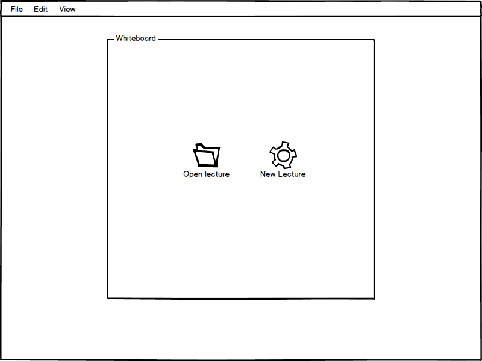
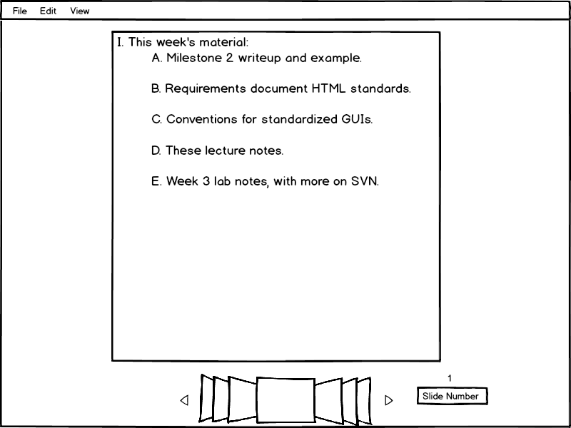
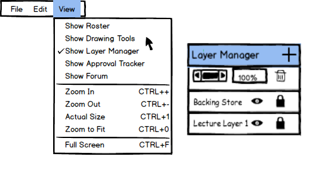
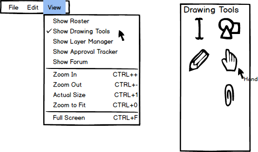

When the presenter has finished logging in and initially invokes the EClass,
the screen appears as shown in Figure 1. The presenter can now either choose
either a pre-made presentation or to make a new one. Both options are
shown in detail in preparing a presentation,
and choosing a presentation.

Figure 1: Presenter's Initial screen.
Once the presenter either chosen or made a new presentation, the first slide
will open in the whiteboard as shown in Figure 2. Along with the updated
whiteboard with content, the UI also shows ways of navigating including
a cover flow, directional arrows, and a slide number selector.

Figure 2: Presenter's Loaded Lecture.
For each slide, the presenter also has access to the layer manager that he/she may use to
create, manage, and accept layers. As shown below in Figure 3, the presenter clicks on
View › Show Layer Manager, and the Layer Manager window pops up. Here, the
presenter can create dynamic and interactive lecture content. It allows students
to submit full layers to teachers, as well as having multiple students draw on a
specific layer at one time.

Figure 3: Layer Manager Features
The presenter also has access to various drawing tools that he/she may use as
aids in the presentation. As shown below in Figure 4, the presenter clicks on
View › Show Drawing Tools, and the Drawing Tools window pops up. Here, the
presenter can use any of the six tools from drawing lines, adding text, basic shapes,
and even attachments.

Figure 4: Presenter's Drawing Tools.